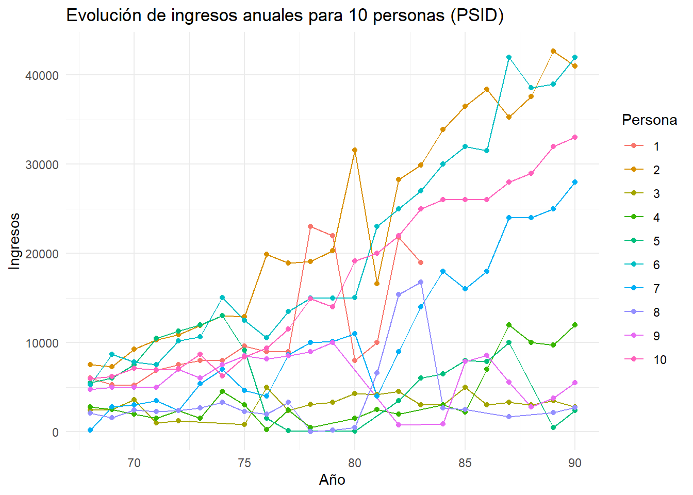

2 Capítulo 2: Datos longitudinales
2.1 ¿Qué son los datos longitudinales?
Los datos longitudinales son aquellos que obtenemos al realizar distintas medidas a un individuo (individuos, regiones, células, etc.). Dichas medidas se pueden observar repetidamente a lo largo del tiempo (análisis temporal), del espacio (análisis espacial), o a lo largo del espacio y tiempo (análisis espacio-temporal); es por eso que a los datos longitudinales también se les conoce como medidas repetidas. Esta forma de observar las medidas nos permite detectar cambios o tendencias temporales en nuestras variables, lo cual nos puede llevar a observar patrones que nos sería difícil examinar en otro tipo de investigaciones. Este tipo de datos es común en estudios donde se busca evaluar cómo evolucionan ciertas características o mediciones bajo distintas condiciones o tratamientos. En el ámbito biosanitario, los datos longitudinales son fundamentales para investigar la progresión de enfermedades, la efectividad de tratamientos y el impacto de intervenciones médicas. En este capítulo, exploraremos las características clave de los datos longitudinales y profundizaremos en las razones por las que los métodos clásicos, como la regresión lineal simple, fallan al aplicarse a este tipo de datos.
Como ya hemos mencionado anteriormente, una de las características que definen a los datos longitudinales es que tenemos medidas repetidas del mismo sujeto, lo que significa que cada unidad tiene varias observaciones en diferentes momentos temporales. No obstante, dichas observaciones no están organizadas de cualquier manera, sino que están agrupadas por unidades (e.g., pacientes, regiones); haciendo que los datos longitudinales adopten una estructura jerárquica. Esta estructura nos lleva a asumir una de las claves en todo este proceso, ya que en los datos longitudinales existe una dependencia entre las observaciones, la cual nos indica que las mediciones dentro de la misma unidad tienden a estar correlacionadas. Por último, tenemos que destacar las distintas variables que definen a dichos datos, y las cuales suelen clasificarse según diferentes propiedades. Como la mayoría de medidas se realizan en distintos del tiempo, diremos que son variables tiempo-dependientes; pero también hay que tener en cuenta que hay otras variables que cambian igual en el tiempo para todos los sujetos (como la edad) que no consideraremos tiempo-dependientes y otras que directamente consideraremos constantes como el sexo. Todas estas particularidades nos permiten definir claramente lo que son los datos longitudinales dentro de un marco de análisis estadístico, diferenciándolos de otros tipos de datos, que no solo establece las bases para comprender cómo organizar y explorar estos datos, sino que también resalta las limitaciones de los métodos estadísticos clásicos para analizarlos de forma adecuada. En consecuencia, entender estas características es esencial para seleccionar y aplicar técnicas analíticas que respeten la estructura, dependencia y clasificación de las variables en los datos longitudinales, garantizando así resultados más precisos y significativos.
El análisis de datos longitudinales se centra en aprovechar las medidas repetidas para abordar preguntas específicas que no pueden ser respondidas adecuadamente con otros tipos de datos. Para poder responder a dichas preguntas de forma correcta, establecemos una serie de objetivos que nos pueden ayudar a enderezar el camino de nuestro análisis de datos longitudinales. Entre estos objetivos, tenemos la observación de la evolución de una variable a lo largo del tiempo/espacio, lo cual nos permitiría poder detectar si los cambios de las variables siguen ciertos patrones o fluctuaciones que tendríamos que tener en cuenta en el estudio. Esta identificación de patrones nos puede aportar información y conocimientos clave en nuestro análisis, ya que nos ayuda a formular ciertas hipótesis que orientan nuestro estudio hacia una visión concreta. Otra parte importante de nuestro análisis reside en comparar si la evolución de una variable a lo largo del tiempo/espacio es igual para distintas partes de la población, y ver si existen factores que regulan la evolución de dicha variable; en cuyo caso deberíamos de estudiar cómo dichos factores interactúan con el tiempo o el espacio.
Los datos longitudinales tienen aplicaciones en una gran diversidad de áreas, ya que es el estudio de medidas a lo largo del tiempo abarca diferentes ámbitos científicos. Por ejemplo, los datos longitudinales tienen una gran importancia en el ámbito biosanitario, ya que existen casos en los que hay medidas repetidas de presión arterial en un grupo de pacientes durante un tratamiento que nos permiten monitorear la salud de los pacientes para poder evaluar la efectividad del tratamiento e identificar posibles efectos secundarios. No obstante, estos datos también tienen su relevancia en educación, dado que la evaluación de los puntajes de un estudiante a lo largo de varios exámenes anuales podría identificar áreas de mejora por parte del alumnado o algunas estrategias pedagógicas que se puedan implementar en la docencia. En ciencias sociales también nos encontramos con casos en los que se utilizan datos longitudinales, ya que se pueden hacer encuestas de opinión realizadas periódicamente a las mismas personas que pueden llegar a ser de gran utilidad a la hora de evaluar posibles campañas de concienciación, o simplemente estudiar el comportamiento y la opinión de la población. Por último, otra de las áreas en la que los datos longitudinales juegan un papel clave es el área de la alimentación mediante el estudio de diferentes dietas a diferentes grupos de la población a lo largo del tiempo a través de medidas tales como la actividad física, y cómo estas dietas aportan ciertos beneficios o riesgos a la salud de la población.
2.2 ¿Por qué no se puede usar la estadística clásica?
La estadística clásica (e.g., regresión lineal simple) supone que todas las observaciones son independientes entre sí. Sin embargo, en datos longitudinales, esta suposición no se cumple debido a la correlación entre observaciones tomadas de la misma unidad. Pero este no es el único motivo por el cual no podemos usar la estadística clásica únicamente para analizar datos longitudinales.
Aplicar estas técnicas clásicas a datos longitudinales nos puede llevar a una serie de problemas que entorpecerían bastante nuestro estudio. Uno de los motivos por los que no debemos utilizar técnicas de estadística clásica para estos datos es que debemos tener en cuenta la dependencia entre observaciones, porque los datos longitudinales tienen una estructura que lleva a que las observaciones sobre el mismo individuo estén correlacionadas; y esta dependencia no se tiene en cuenta en métodos como la regresión lineal simple. Siguiendo el punto anterior, la correlación de los errores nos fuerza a evitar estas técnicas, ya que los datos longitudinales contienen una correlación en los errores que no puede ser modelada correctamente a través de modelos de estadística clásica como podría ser un modelo de regresión lineal simple. Esto ocurre porque las medidas repetidas pueden estar influenciadas por factores externos o por variables no registradas en modelos clásicos. La variabilidad es otro de los motivos por los que no se pueden usar modelos clásicos para datos longitudinales, y es que estos modelos no tienen un enfoque apropiado para la variabilidad de los datos; ya que adaptan una estructura homogénea la cual no corresponde con un modelo de datos longitudinales en el cual hay que tener en cuenta las diferencias entre individuos. A raíz de esta variabilidad surge otro problema que lleva a evitar utilizar estadística clásica para este tipo de datos: los sesgos. Al ignorar dichas diferencias entre individuos y la dependencia entre observaciones, las estimaciones no reflejan correctamente la relación entre variables ya que no cuentan con la existencia de efectos aleatorios, entre otros. Todos estos problemas nos llevan a evitar el uso de técnicas de estadística clásica como la regresión lineal simple, pero la mejor forma de ver esto es a través de un ejemplo práctico.
2.2.1 Ejemplo conceptual
Para ilustrar las limitaciones de la estadística clásica en el análisis de datos longitudinales, vamos a considerar un conjunto de datos sobre ingresos anuales de personas a lo largo de varios años (psid). Vamos a utilizar un modelo regresión lineal simple para modelar los ingresos en función del tiempo, ignorando la correlación entre mediciones.
Figura 1. Evolución de los ingresos anuales de 10 personas a lo largo del tiempo.
Este gráfico muestra la evolución de los ingresos anuales para diferentes personas a lo largo del tiempo, en el que cada línea representa a una persona; mostrando cómo los ingresos varían entre individuos y años. Se observa que los datos son heterogéneos y varían significativamente entre individuos, lo que muestra la dependencia entre observaciones; algo que viola los supuestos básicos de independencia de las observaciones, fundamentales para modelos clásicos como la regresión lineal simple.
Visto esto, intentemos modelar la relación entre los ingresos y el tiempo utilizando una regresión lineal simple, ignorando la dependencia entre observaciones.
El siguiente gráfico muestra el ajuste de la regresión lineal simple aplicada a los datos:

Figura 2. Ajuste de un modelo de regresión lineal simple a los datos observados. La línea roja representa la pendiente estimada, que asume que todos los individuos comparten la misma relación entre ingresos y tiempo.
Este gráfico muestra cómo la regresión lineal simple aplicada a estos datos genera una representación distorsionada, ignorando por completo la correlación de los datos longitudinales; dando lugar a un mal ajuste y a resultados estadísticos inapropiados que demuestran por qué no debemos utilizar estadística clásica para este tipo de datos. No obstante, vamos a analizar la adecuación y diagnóstico del modelo para ver realmente cómo las técnicas de estadística clásica no son las correctas para trabajar con datos longitudinales.
Primero, estudiaremos la adecuación del modelo a través de una medida fundamental de bondad de ajuste como el coeficiente de determinación R²:
[1] 0.2174551Ya solo al utilizar un modelo de regresión lineal simple, estamos asumiendo que la variabilidad entre individuos se puede representar con un único coeficiente, ignorando por completo la dependencia entre observaciones. Para evaluar la adecuación del modelo, fijémonos en el R². El R² obtenido es muy bajo, indicando que el modelo explica muy poca variabilidad en los datos (21%) y que, por tanto, no nos sirve para analizar datos longitudinales ya que no captura adecuadamente la relación entre las variables. Además, dado que estamos trabajando con datos longitudinales, las violaciones de los supuestos de independencia y homocedasticidad podrían comprometer la validez de este resultado, algo que exploraremos en el diagnóstico del modelo.
Para analizar el diagnóstico del modelo, haremos un análisis de los residuos del modelo. Recordemos que dicho análisis se basa en 4 partes fundamentales: la normalidad de los residuos, que tengan media cero, la no correlación y la homocedasticidad.

Figura 3. Gráficas de los residuos del modelo.
Primero de todo, analicemos la normalidad de los residuos. Para ello, nos fijamos en la gráfica de arriba a la derecha (Normal Q-Q), en la cual vemos que aunque la mayoría de los puntos se alinean con la línea teórica, no son pocas las desviaciones que hay en los extremos; lo que sugiere que los residuos no son perfectamente normales. Para salir de dudas, podemos aplicar un test de Jarque Bera.
Jarque Bera Test
data: lm_incorrect$residuals
X-squared = 7.4614, df = 2, p-value = 0.02398Como bien podemos comprobar, el p-valor nos permite concluir que podemos rechazar la hipótesis nula y que, por tanto, los residuos no tienen normalidad.
Lo segundo que vamos a analizar es la media cero de los residuos, para lo cual nos vamos a fijar en la primera gráfica: Residuals vs Fitted. Viendo la gráfica, podemos observar que los errores no tienen media cero ya que para los valores ajustados más altos se alejan mucho de la recta y=0; por lo que esta es otra muestra más de que el modelo no es correcto para este tipo de datos.
La tercera parte que vamos a analizar es la no correlación entre los errores, la cual se puede analizar en la primera gráfica. Si nos fijamos, se puede observar un patrón curvilíneo a medida que aumenta el valor de los valores ajustados, por lo que se podría decir que los errores están correlacionados. Aún así, haremos un test de Durbin-Watson para comprobar la no correlación.
Durbin-Watson test
data: lm_incorrect
DW = 0.29002, p-value < 2.2e-16
alternative hypothesis: true autocorrelation is not 0En efecto, haciendo el test de Durbin-Watson vemos como el p-valor es extremadamente bajo y deja que concluyamos que podemos rechazar la hipótesis nula y, por tanto, asumamos que la correlación entre los errores no es 0; otro motivo más para ver que este modelo no funciona bien con datos longitudinales.
Por último, analizaremos la homocedasticidad de los errores. Para ello, nos fijaremos en la primera y en la tercera gráfica (Scale-Location). A través de la gráfica Residuals vs Fitted, vemos como los residuos no tienen una varianza constante, sino que a medida que aumenta el valor de los valores ajustados aumenta su dispersión; por lo que no tienen homocedasticidad, sino heterocedasticidad. Mirando la gráfica Scale-Location, podemos observar una tendencia creciente por parte de los residuos que nos permite ver cómo no tienen varianza constante y, por lo tanto, no tienen homocedasticidad. Para confirmarlo, haremos un test de Breusch-Pagan.
Breusch-Pagan test
data: lm_incorrect
BP = 88.029, df = 1, p-value < 2.2e-16De nuevo, vemos cómo el p-valor es extremadamente pequeño, lo que hace que podamos concluir que podemos rechazar la hipótesis nula y que, por tanto, los residuos no tienen homocedasticidad.
A través de este análisis, hemos podido comprobar que no podemos usar modelos de estadística clásica, tal y como la regresión lineal simple, para trabajar con datos longitudinales.
Una visión más acertada sería utilizar un modelo que se ajuste a cada individuo.
Figura 4. Gráfica del modelo para cada individuo.
En esta gráfica, podemos observar que cada individuo tiene un comportamiento único en cuanto a la evolución de sus ingresos a lo largo del tiempo. Los interceptos y las pendientes varían significativamente entre las personas, lo que evidencia que un único modelo no puede capturar adecuadamente la relación entre el tiempo y los ingresos para todos los individuos. Este resultado destaca la heterogeneidad presente en los datos y la necesidad de utilizar modelos que consideren esta variabilidad. Al ajustar un modelo por cada individuo, capturamos mejor las características específicas de cada sujeto, pero esta estrategia presenta limitaciones: aunque mejora la representación de la variabilidad entre individuos, no permite hacer inferencias generales sobre la población; además de que en escenarios con un gran número de individuos, esta aproximación no es práctica. Por ello, los modelos mixtos emergen como una solución adecuada, ya que combinan efectos fijos y aleatorios para capturar tanto las tendencias generales de la población como las diferencias específicas entre individuos. Esta aproximación ofrece un equilibrio entre flexibilidad y generalización, respetando las características únicas de los datos longitudinales.